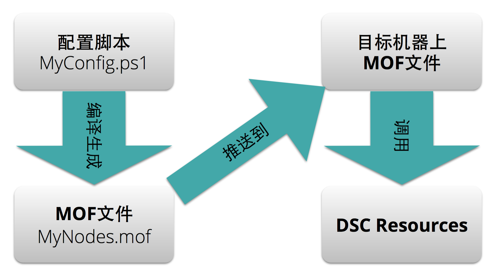
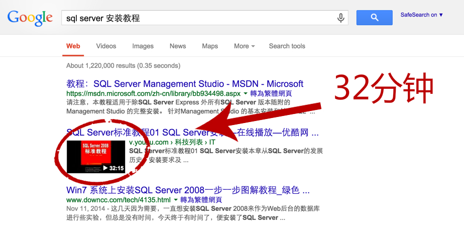
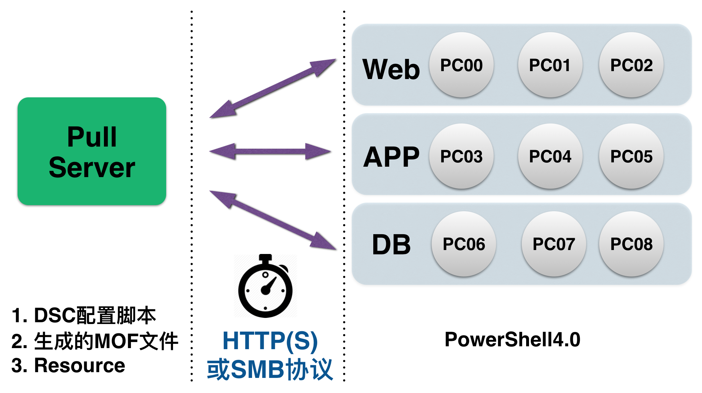

Windows下
自动化配置管理实践
姚文杰
wjyao@thoughtworks.com
日常环境的配置管理包括哪些
---- 举些栗子
- 安装IDE、数据库
- 管理文件
- 管理服务
- 部署网站等等
自动化 ≈ 脚本化
Windows VS Linux/Unix
项目实际需求
- 基于.NET开发
- 开发、测试、部署都是基于Windows Server机器
- 现存大量的Bat/Powershell脚本
- 几十台开发、测试机器
- 十几个云上产品环境
从安装应用自动化开始说起
最开始的方案
手动 + Bat/PS脚本（MSI）
Linux包管理工具
- yum
- apt-get
Windows下包管理工具


具体使用
chocolatey install git －version *.*.*
choco install git
cinst git
cinst git -source http://192.168.56.11/nuget
Nuget + Chocolatey搭配使用
内网里搭建起Nuget Server，用于项目专用软件包源。
安装应用 - 使用Windows下的包管理
优点:
- 实现了Windows下绝大多数软件包的安装和管理自动化
- 可以自己创建包源，搭建自己的软件包Repo
- 命令行较为友好
- 扩展性高，可以自己制作分享软件包
Windows下其他配置管理/部署项
- 管理一些文件
- 启动一些服务
- 配置一些工具
- 部署一些Website
之前的做法
- 开发/产品环境 - 采用手动和脚本并行的策略(半自动) - 持续交付流水线中的测试环境（运行build、tests的机器） - 做好对应的镜像，每天凌晨定时从镜像中心拷贝并重建对应的环境
几个缺点
- 新人对环境如何配置，具体配置成什么样无从了解
- 环境相对固定，更改会相对麻烦
- 维护的Windows镜像过于庞大
- 半自动化的管理和部署策略风险较大
使用配置管理工具？
Windows自己原生的自动化配置管理方案
微软原生 - 基于WMF4.0的
Desired State Configuration(DSC)
期望状态配置
几点原因 - DSC的特点
- 微软原生
- 不依赖额外的工具
- 远程通信的方式多样、可靠
- 声明式的配置脚本
- 可扩展性高
- 支持多机器集群配置,部署
- 支持云平台及虚拟化技术
几点限制
- 依赖PowerShell4.0(WMF4.0) - 预装在Windows8.1及Windows Server 2012 R2的机器上 - Windows 7, Windows Server 2008 R2, Windows Server 2012升级Powershell到4.0后也可以使用 - 对权限要求相对较高 - 用户操作权限 - 网络访问权限等
DSC的实现方式
编写配置脚本
Configuration MyConfig
{
Node "HostName_Or_IpAddress"
{
WindowsFeature IIS
{
Ensure = "Present"
Name = "Web-Server"
}
File MyFileExample
{
Ensure = "Present"
Type = "Directory“ # Default is “File”
Recurse = $true
SourcePath = $WebsiteFilePath
DestinationPath = "C:\inetpub\wwwroot"
DependsOn = "[WindowsFeature]MyRoleExample"
}
}
}
执行配置脚本
PS C: > MyConfig
#生成一个目录，目录下MyConfig.mof
PS C: > Start-DscConfiguration -Wait -Verbose -Path .\MyConfig
#执行一个DSC配置
DSC实现配置管理的核心？
Resource
Windows自带的Resource
|Resource|描 述| |--|--| |Archive| 在目标机器上解压zip文件| |Environment| 管理目标机器的环境变量| |File|管理目标机器的文件和目录| |Group| 管理目标机器上的本地用户组| |Log|日志配置信息| |Package| 在目标机器上安装和管理应用程序包 |
Windows自带的Resource
|Resource|描 述| |--|--| |WindowsProcess|管理目标机器上进程| |Registry|管理目标机器上注册表key value| |WindowsFeature|在目标机器上添加功能或者角色| |Script|在目标机器上运行PowerShell脚本| |Service|管理目标机器上的服务| |User|管理目标机器上本地用户账号|
扩展 - 微软实验性的Resource
利用DSC自动化配置工具
以SQL Server为例

首先，手动安装SQL Server需要多少步？
单纯PowerShell脚本的实现
if(!(Test-Path 'C:\SQLServer2008.zip')) {
(New-Object Net.WebClient).DownloadFile(‘http://10.18.8.100/ sql_server.zip','C:\SQLServer2008.zip');
}
if(!(Test-Path 'C:\sql_server'))
{
& 'C:\Program Files\7-Zip\7z.exe' x C:\SQLServer2008.zip -oC:\
C:\sql_server\setup.exe /ConfigurationFile=C:\ConfigurationFile.ini
}
DSC脚本的实现
xSQLServerSetup MySQLServer
{
SourcePath = ****
SourceFolder = ****
SetupCredential = ****
Features = ****
InstanceName = ****
InstanceID = ****
PID = ****
UpdateEnabled = ****
UpdateSource = ****
… …
}
利用DSC自动化部署网站
以IIS为例
同样，手动利用IIS部署需要多少步？
DSC脚本的实现
xWebSite MyWebsite {
Name = "MyWeb"
ApplicationPool = "MyAppPool"
Ensure = "Present"
PhysicalPath = "C:\TestWebSite"
DirectoryBrowsing = "Enable"
BindingInfo = @(
@(MSFT_xWebBindingInformation
{
Protocol = "HTTPS"
Port = 2001
}
)
)
State = "Started"
DependsOn = @("[WindowsFeature]IIS", "[cAppPool]MyAppPool")
}
Demo演示
- 安装/启动 IIS及相关组件
- 创建静态页面文件
- 部署应用池
- 部署该静态页面，发布网站
把安装应用程序的过程也加入到DSC脚本中来
- 使用Package这个Resource
- 编写一个Resouce，名为Choco
自定义Resource
Resource实际上是一个PowerShell模块
- choco.psd1 - 基本数据（作者/版本等等）
- choco.schema.mof - 基本概要（属性及属性类型）
- choco.psm1 - 具体的执行脚本模块文件
choco.psm1的三个函数
- Get-TargetResource - 返回当前状态
- Set-TargetResource - 设置系统状态
- Test-TargetResource - 比较当前状态与理想状态
安装git - DSC脚本的写法
Configuration MyConfig
{
Node "HostName_Or_IpAddress"
{
Choco Git
{
Name = "git"
Ensure = "Present"
Version = ***
Source = ***
}
}
}
集群部署的方案
一 - Push模式
二 - Pull模式
DSC的两种模式对比
- Push模式 - 无实际服务器 - 部署前，Resource需要目标机器上 - 在执行时生效 - 适合少量机器管理及本地调试 - Pull模式 - 需要Pull服务器 - Resource保存在服务器上，目标机器按需拉取 - 定期监控状态，使目标机器处于期望状态 - 适合大量机器集群管理
日志及故障排除
- 在运行至加Verbose:
Start-DSCConfiguration －Verbose - 使用Log、xDSCDiagnostic这样的内外部Resource
- 使用Windows自带的Event Viewer
总结 - 带来的好处
- 整体环境配置实现“基础设施即代码”
- 环境配置更加可视化
- 易于配置修改或变动
- Pull模式下监控的机器环境更加可控
- HTTPS的传输方式更加安全
- 后期可扩展
> WMF 5.0， DSC功能增强，添加Resource库，愈发完善
该种实践的应用场景
适合的场景
- Windows服务器系统环境 - 环境配置复杂、易变
不适合的场景
- 非Windows平台，或过老的Windows系统 - 太多的网络或者权限限制 - 环境配置简单，单纯
Reference
- 我对《The DSC Book》的中文翻译 - https://yaowenjie.gitbooks.io/the-dsc-book/content/ - 本次Session的PPT - https://yaowenjie.github.io/share/dsc-slide/ - Demo样例 - https://github.com/Yaowenjie/PowerShell-DSC-Stuff.git
Thank You
Q&A
- 姚文杰
- yaowenjie.github.io